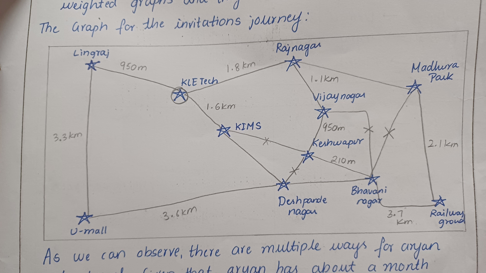

High-Tech Business Parks solutions align with SDG 11.3, enhance inclusive and sustainable urbanization and capacity for participatory, integrated and sustainable human settlement planning and management in all countries.
Shared Mobility Services align with SDG 11.2, which focuses focuses on providing access to safe, affordable, accessible, and sustainable transport systems for all, with special attention to the needs of vulnerable groups, including women, children, persons with disabilities, and older persons, by 2030.
Shared mobility services, such as car-sharing, bike-sharing, ride-hailing, and electric scooters, directly contribute to achieving this goal in several ways:
Autonomous Delivery Services align with SDG 11.2 which focuses on providing access to safe, affordable, accessible, and sustainable transport systems for all, with special attention to the needs of vulnerable groups.
Cultural and Entertainment Districts align with SDG 11.4, focuses on strengthening efforts to protect and safeguard the world’s cultural and natural heritage.
Cultural and Entertainment Districts in a new city can play a vital role in advancing this goal by preserving and integrating cultural heritage.
Mixed-Use Real Estate Projects align with SDG 11.3, which focuses on sustainable urbanization and participatory, integrated urban planning, is closely tied to mixed-use real estate projects in a new city. These projects combine residential, commercial, cultural, and recreational spaces, offering a range of opportunities to promote sustainability.
As discussed in the beginning of DAA, nature is something, we can provide real world problem solutions through nature.
Nature is all about patterns and Structures.
Repeated cycles of seasons- spring, summer, rainy, winter are iterative processes in nature. They will repeat until some other climatic changes hit.
We saw patterns on the millipede and it follows recursion.
Backtracking in real world nature, when the rabbits explore burrow systems.
If they don't find their way, they backtrack!
The extra space taken by the algorithm is the space efficiency. Whereas, the time taken by the algorithm is time efficiency.
They are important in terms of costs, processing time and depends upon the memory too.
O(1) -> constant order of growth
O(n) -> linear order of growth
O(log n) -> logarithmic order of growth
After analyzing different algorithms, everything made sense with principles. Brave and cautious travel relates us to a BFS and DFS graph traversals. Prefixes and suffixes play important roles in the substring algorithm (Boyer Moore and KMP) Balancing and Rotations is necessary in AVL and black trees. We need all these principles to understand algorithms in a design approach manner!
The most efficient way to take down hierarchical data is using binary tree. Binary search trees can create skewed trees and in order to balance it, we moved to the notation of introducing more than one item in a node. Hence, we used AVL trees ( to rotate as it still introduced skewness) Red black trees is more easier to implement than AVL. Trie is used to spell check, and dictionary. Heap can be created based on different requirements and we heapify.
Websites like Amazon allow customers to filter products based on price ranges.
Shoppers can specify a minimum and maximum price to quickly find items that fit their budget.
Financial trading platforms use range queries to allow traders to analyze stock performance over specific time periods.
BIT with simpler code for range queries, operating on the principle of isolating the last bit.
Array queries, look up table precomputes and keep the results.
Tree
-A connected, acyclic graph with n nodes and n-1 edges.
-always has a root node.
-always connected.
-no cycles.
Graphs
-Collection of vertices connected by edges, cyclic and even disconnected.
-no specific root unless mentioned.
-can be connected or disconnected.
-have cycles.
Tree traversals
1. Pre order: Root,Left,Right
2. In order: Left, Root, Right
3. Post order: Left, Right, Root
Eg: heap, BST for search, insert, delete
Graph Traversals
DFS: traverse as deep as possible before backtracking.
Eg: Road maps, Invitation problem.
BFS: visit all neighbour nodes before moving.
Eg: Networks (social networks)
Sorting algorithms organizes data into a specific order (ascending or descending)
1. Bubble Sort: repeatedly compares adjacent elements and swaps in order.
2. Insertion Sort: We Insertion, elements in correct positions.
3. Selection Sort: Selects the smallest or largest element from unsorted portion and places in sorted portion.
4. Merge sort: divides the arrays into halves and merge them.
5. Quick sort: picks a "pivot", partitions the array around it.
Applications:
Database Management: Sorting records for efficient querying and indexing.
E-commerce: Displaying products based on price, rating.
Searching Algorithm: locate a specific element in a data structure.
This includes, linear and binary searches, graph- based Searches.
Applications:
Searching for files in hierarchical directories, Hash- based searches.
Spanning trees connect all vertices with minimal total edge weight, minimizing total network cost.
Whereas, shortest path find the minimal path weight between specific vertices minimizing travel or traversal cost.
Real world application:
Spanning trees: Building utility networks like water or gas pipelines
Shortest path: optimizing traffic flow.
-Backtracking: N queens problem was discussed in the class. It involves solving all possible solutions and pruning which aren't required.
-Divide and conquer: Quick sort and Merge sort
-Shortest path: Floyd's, Dijkstra's.
Here we find the shortest paths possible with the provided weights using or implementing a cost matrix.
-Graph traversal: Brace and Cautious travel helps us to traverse accordingly and backtrack when needed.
In this particular business case, we can apply KRUSKAL's algorithm to find the minimum spanning tree (MST).
Considering, the example of ZEPTO delivery services, our city would implement the same but using this algorithm.
FASTER the service, HAPPIER the customer is the goal (successful business implementation too).
Providing the MST to the delivery man can be done using the live location and the algorithm would provide us the shortest path with less costs(We all know petrol is costly) and less time, directly supporting the business growth!
As the delivery man would know the location prior hand when the orders are placed by the customers,
then we can use Kruskals algorithm to find the MST for the delivery man.
The algorithm would be used in such a way that the locations of the customers are already known and we would solve it like the INVITATION problem done in the classroom.

Sample Code for Kruskal's
As mentioned in the chart of our city Indraprasth, some areas were left barren to start these real-estate Projects. Kruskal's algorithm is used to find a Minimum Spanning Tree (MST), which can help optimize the layout of roads, electrical grids, or water supply systems. - Example: Ensuring all areas are connected with minimal construction cost. Kruskals algorithm will help us to find the most efficient route for laying the pipelines for water management system or the electrical grids with the least possible cost.
Kruskal's algorithm is used to find a Minimum Spanning Tree (MST), As the architect, would have already
designed the entire layout, the next task can be done through Kruskal's algorithm which is to minimize the construction costs for our project.
Sample Code for Kruskal’s
Cultural and Enteratainment sector is that part of our city where the ticket collecting system can be applied. Cultural programs can use QUICK SORT technique to sort the audience and their purchased tickets accordingly. Just like the PVR or any concert we all are been too, THE RECLINER, THE GOLD, THE SILVER and maybe many more. The people need to be seated according to the seat and hence, sorting them based on their ticket number is the most efficient way to solve this particular problem.
Quick sort can be implemented in this case, as we have large amounts of data. Quick sort is efficient in sorting large amounts of data (ticket numbers) and has an efficiency O(1.38n log n) in the average case.
Sample Code for Quick sort